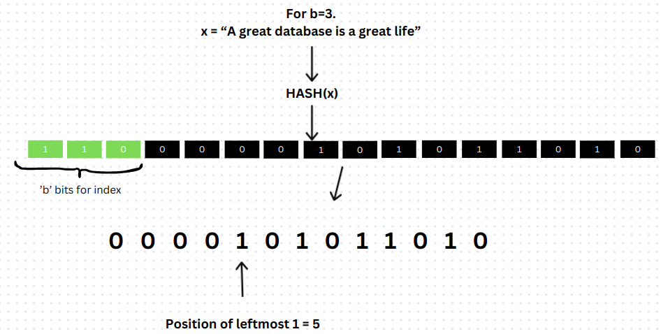
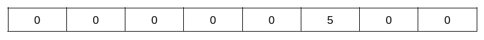
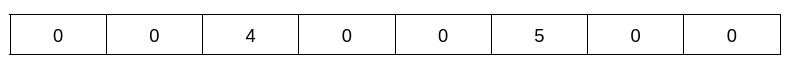
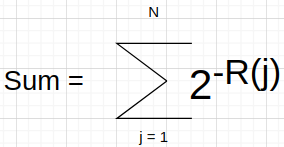

项目 #0 - C++ 入门
不要将您的项目发布到公开的 Github 仓库上。
概述
本学期所有的编程项目都将基于 BusTub 数据库管理系统。该系统使用 C++ 编写。为了确保您具备必要的 C++ 基础，您必须完成一个简单的编程作业来评估您对基本 C++ 特性的了解。本项目不会给您评分，但您必须以满分完成本项目才能继续本课程的学习。任何无法在截止日期前完成此作业的学生将被要求退课。
本编程作业中的所有代码必须使用 C++ 编写。项目将专门为 C++17 编写，但我们发现通常了解 C++11 就足够了。如果您之前没有使用过 C++，以下是一些可以帮助您的资源：
- 15-445 Bootcamp，其中包含多个小示例，帮助您熟悉 C++11 特性。
- Learncpp 是一个有用的资源，包含测试您知识的测验。
- cppreference 提供了更详细的语言内部机制文档。
- A Tour of C++ 和 Effective Modern C++ 也可以在 CMU 图书馆 digitally 获取。
如果您使用 VSCode，我们建议您安装 CMake Tools、C/C++ Extension Pack 和 clangd。之后，按照本教程学习如何在 VSCode 中使用可视化调试器：Debug a C++ project in VS Code。
如果您使用 CLion，我们建议您按照本教程操作：CLion Debugger Fundamentals。
如果您更喜欢使用 gdb 进行调试，有很多教程可以教您如何使用 gdb。以下是一些我们认为有用的教程：
- Debugging Under Unix: gdb Tutorial
- GDB Tutorial: Advanced Debugging Tips For C/C++ Programmers
- Give me 15 minutes & I'll change your view of GDB [视频]
这是一个个人项目，需要独立完成（即不分组）。
- 发布日期： Aug 25, 2024
- 截止日期： Sep 08, 2024 @ 11:59pm
项目规格说明
考虑这样一个问题：在一天内追踪访问网站的独立用户数量。虽然对于只有少数人访问的小型网站来说这很简单，但在处理拥有数十亿用户的大型网站时要困难得多。在这种情况下，将每个用户存储在列表中并检查重复是不切实际的。庞大的数据量带来了重大挑战，包括内存耗尽、处理时间缓慢和其他低效问题。
HyperLogLog（HLL）是一种概率型数据结构，用于追踪大规模数据集的基数。HyperLogLog 适用于上述场景，其目标是在不显式存储每个项目的情况下计算大规模数据流中独立项目的数量。HLL 依赖于巧妙的哈希机制和紧凑的数据结构，仅使用传统方法所需内存的一小部分即可提供对独立用户的准确估计。这使得 HLL 成为现代数据库分析中不可或缺的工具。
HLL 提供了基于以下参数的概率计数机制：
b- 哈希值二进制表示中初始位的数量m- 寄存器（也称为桶）的数量 - 可以视为一个内存块。它们等于 2^b。（在讨论 HyperLogLog 和任务时，"桶"和"寄存器"这两个术语可以互换使用。）p- 最左边 1 的位置（1的 MSB 位置）
使用字符串 "A great database is a great life" 来简单说明该算法的工作原理。首先，对字符串进行哈希处理以产生哈希值，然后将其转换为二进制表示。从哈希值（二进制形式）中，从最高有效位（MSB）开始提取 b 位。寄存器值由提取的位计算得出。（默认情况下每个寄存器的值为 0）。
从剩余的位集合中，获取最左边 1 的位置（MSB），即从左开始的连续零的数量加 1（如下面的图片所示）。

之后，使用 b 位计算寄存器值（在上述情况下为 6）。因此，在寄存器 6 中将存储 max(register[6], p)。

集合中的另一个值在寄存器 3 中可能有 p = 2，因此 2 将存储在寄存器 3 中。

现在，集合中的另一个元素在寄存器 6 中有 p = 2。因此，max(register[6], p) –> max(5, 2) 将存储在寄存器 6 中。
类似地，另一个元素在寄存器 3 中有 p = 4，max(register[3], p) –> max (2, 4) 将存储在寄存器 3 中。

在集合中的所有元素都添加完毕后，基数按以下方式计算。
如果总共有 m 个寄存器，则：

其中 constant = 0.79402，R[j] 是寄存器 j 中的值，N = m。
资源
要更多了解 HLL 及其工作原理，
- 关于 HyperLogLog 的简短论文。其中包含 HyperLogLog 的描述。
- 如果您想更温和地了解其概率原理，请观看此视频和视频以获得更简单的解释。
- 一篇关于 Meta 实现 HLL 的博客 - Presto
注意：
- 在实际实现中，一些系统在寄存器中存储最左边 1 位的位置（MSB），而另一些则存储最右边连续零的数量（LSB）。在本项目中
- 任务 1 将使用前者方法，存储寄存器中最左边 1 位的位置。
- 任务 2 将使用后者方法，存储寄存器中最右边连续零的数量。
说明
您需要完成本项目的两个函数部分：
任务 #1
第一步是实现一个基本的 HyperLogLog 数据结构。
在 hyperloglog.h 中，需要实现以下函数：
HyperLogLog(inital_bits)：构造函数，提供前导位数（b）。GetCardinality()：返回给定集合的基数值。AddElem(val)：计算并将值放入寄存器中。ComputeCardinality()：根据上述公式计算基数。
此外，您可以实现辅助函数来完成上述功能（可根据需要添加更多）：
ComputeBinary(hash_t hash)：计算给定哈希值的二进制表示。哈希值应转换为 64 位二进制流（否则测试可能会失败）。PositionOfLeftmostOne(....)：计算最左边 1 的位置。
对于计算哈希，您可以使用给定的函数：
CalculateHash(...)- 用于计算哈希
请参考 std::bitset 库来存储二进制表示。
当获得十进制值时，将其转换为小于或等于该小数的最大整数。更多详情请参考 std::floor。
任务 #2
在第二步中，您将实现 Presto 的 HLL 密集布局实现（参考密集布局部分）。
注意：在 Presto 的实现中，计算二进制最右边连续零的数量（而不是左边的零计数）。在此任务中，应使用类似的方法。

HLL 以下列方式存储溢出桶：如果最右边连续零的数量为 33，其二进制形式为 0100001。在这种情况下，它将被分成两部分，前 3 个 MSB 010 和后 4 个 LSB 0001。0001 将存储在密集桶中，而 MSB 010（即溢出位）存储在溢出桶中。
在 hyperloglog_presto.h 中，以下函数将用于评分：
GetDenseBucket()- 返回密集桶数组GetOverflowBucketOfIdx(..)- 返回给定索引的溢出位集合（如果存在）。GetCardinality()- 返回基数值
不要删除上述函数。
实现以下函数：
HyperLogLogPresto(initial_bits)- HyperLogLogPresto 的构造函数AddElem()- 计算并将值放入寄存器中。ComputeCardinality()- 根据上述公式计算基数。
对于计算哈希，您可以使用给定的函数：
CalculateHash(...)- 用于计算哈希
当获得十进制值时，将其转换为小于或等于该小数的最大整数。
重要信息
-
在任务 2 中，将哈希值转换为 64 位二进制，然后计算连续零的数量（LSB）。
-
对于在任务 1 和 任务 2 中计算基数，应遵循以下步骤。
- 计算指数之和，并使用
double变量以默认精度（无需自定义精度）将其存储在内存中。公式中需要存储在内存中的部分如下所示。使用std::pow计算指数。

- 使用上面计算的总和，按以下方式确定基数。

- 获得上述结果后，将其转换为小于或等于该值的最大整数。（如上所述）。
- 计算指数之和，并使用
不遵循上述步骤可能导致不准确的结果，与测试用例不一致。
创建您自己的项目仓库
如果以下 git 概念（例如仓库、合并、拉取、分叉）对您来说不太清楚，请先花一些时间学习 git。
按照说明设置您自己的私有仓库和开发分支。如果您之前通过 GitHub 界面（点击 Fork）分叉了仓库，请不要将任何代码推送到您公开的分叉仓库！在 git push 任何代码之前，请确保您的仓库是私有的。
如果教师对代码进行了任何更改，您可以通过将私有仓库连接到 CMU-DB 主仓库来合并更改到您的代码中。执行以下命令添加远程源：
$ git remote add public https://github.com/cmu-db/bustub.git
然后您可以在学期期间根据需要拉取最新的更改：
$ git fetch public $ git merge public/master
设置您的开发环境
首先安装 BusTub 所需的软件包：
# Linux $ sudo build_support/packages.sh # macOS $ build_support/packages.sh
请参阅 README 获取有关如何设置不同操作系统环境的更多信息。
要从命令行构建系统，请执行以下命令：
$ mkdir build $ cd build $ cmake -DCMAKE_BUILD_TYPE=Debug .. $ make -j`nproc`
我们建议始终以调试模式配置 CMake。这将使您能够输出调试消息并检查内存泄漏（更多内容见以下部分）。
测试
您可以使用我们的测试框架来测试本次作业的各个组件。我们使用 GTest 进行单元测试。您可以通过在测试名称前添加 DISABLED_ 前缀来禁用 GTest 中的测试。要从命令行运行测试：
$ cd build $ make -j$(nproc) hyperloglog_test $ ./test/hyperloglog_test
在本项目中，没有隐藏的测试。在以后的项目中，起始代码中提供的测试只是我们用来评估和评分您项目的所有测试的子集。您应该自行编写额外的测试用例来检查您实现的完整功能。
请确保您删除了测试名称中的 DISABLED_ 前缀，否则它们将不会运行！
格式化
您的代码必须遵循 Google C++ 风格指南。我们使用 Clang 自动检查您的源代码质量。如果您的提交未通过这些检查中的任何一项，您的项目成绩将为零。
执行以下命令检查您的语法。format 目标将自动修正您的代码。check-lint 和 check-clang-tidy 目标将打印错误，您必须手动修复这些错误以符合我们的风格指南。
$ make format $ make check-clang-tidy-p0
内存泄漏
在本项目中，我们使用 LLVM Address Sanitizer (ASAN) 和 Leak Sanitizer (LSAN) 来检查内存错误。要启用 ASAN 和 LSAN，请以调试模式配置 CMake 并照常运行测试。如果存在内存错误，您将看到内存错误报告。请注意，macOS 仅支持地址检测器而不支持泄漏检测器。
在某些情况下，地址检测器可能会影响调试器的可用性。在这种情况下，您可能需要通过以下方式配置 CMake 项目来禁用所有检测器：
$ cmake -DCMAKE_BUILD_TYPE=Debug -DBUSTUB_SANITIZER= ..
开发提示
您可以在调试模式下使用 BUSTUB_ASSERT 进行断言。请注意，BUSTUB_ASSERT 中的语句在发布模式下将不会被执行。
如果您需要在所有情况下进行断言，请使用 BUSTUB_ENSURE 代替。
我们将以发布模式测试您的实现。要以发布模式编译您的解决方案，
$ mkdir build_rel && cd build_rel $ cmake -DCMAKE_BUILD_TYPE=Release ..
请将关于本项目的所有问题发布在 Piazza 上。 不要直接给助教发邮件提问。
助教在本项目中不会查看您的代码或帮助您调试。
评分标准
为了通过本项目，您必须确保您的代码遵循以下准则：
- 提交是否成功执行了所有测试用例并产生了正确答案？
- 提交是否在没有内存泄漏的情况下执行？
- 提交是否遵循了代码格式化和风格策略？
请注意，在未来的项目中，我们将使用额外的测试用例来评分您的提交，这些测试用例比我们提供给您的示例测试用例更复杂。
迟交政策
本项目没有迟交天数。
提交
您将把实现提交到 Gradescope：
在 build 目录中运行此命令，它将创建一个名为 project0-submission.zip 的 zip 归档文件，您可以将其提交到 Gradescope。
$ make submit-p0
虽然您可以随时多次提交答案，但您不应将 Gradescope 作为您唯一的调试工具。大多数学生在截止日期前提交项目，因此 Gradescope 将需要更长的时间来处理请求。您可能无法及时获得反馈来帮助您调试问题。此外，Gradescope 的输出不太可能像调试器（如 gdb）的输出那样提供有用的信息，前提是您花了一些时间学习使用它。
CMU 学生应使用在 Piazza 上公布的 Gradescope 课程代码。
协作政策
- 每位学生必须独立完成本次作业。
- 学生可以与他人讨论项目的高层次细节。
- 学生不允许在与其他学生的小组会议后复制白板上的内容。
- 学生不允许复制他人的答案。
- 在本项目中，您可以在 Google 上搜索或向 ChatGPT 提问高层次的问题，如"什么是 HyperLogLog？"、
"如何使用
std::move"。
警告：本项目的所有代码必须是您自己的。您不得从其他学生或网上找到的其他来源复制源代码。抄袭行为绝不被容忍。更多信息请参见 CMU 的学术诚信政策。